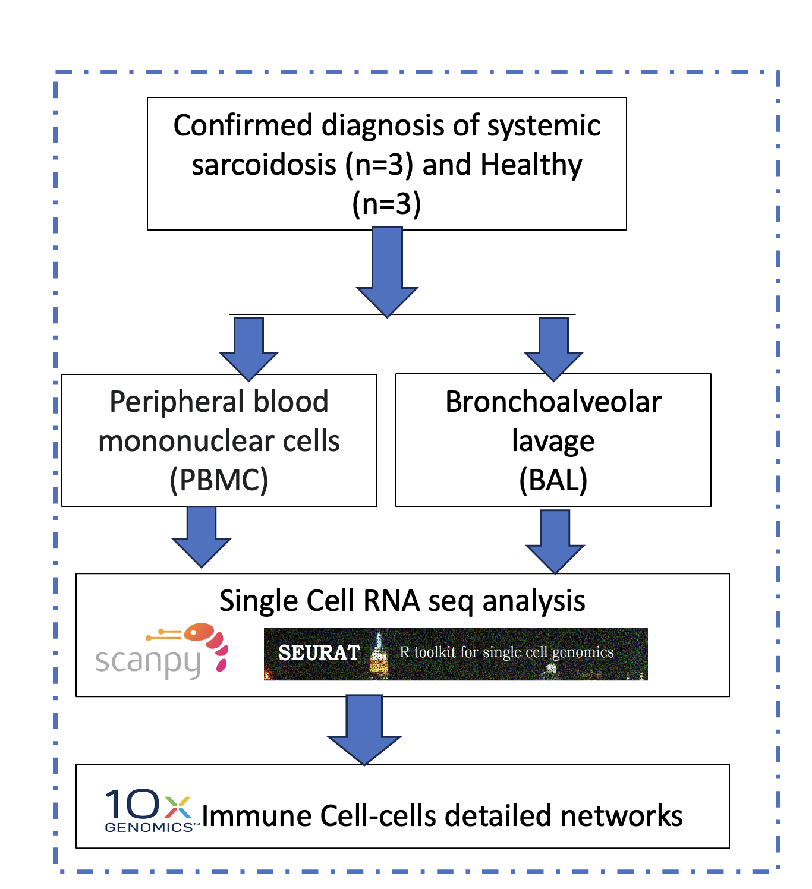

Welcome to analysis page of Sarcoidosis scRNA-seq
Sarcoidosis is a multisystem immune-responsive disease that disproportionately affects women and African Americans. It is characterized by the formation of non-infectious granulomas in various organs of the body, including the lungs, eyes, nervous system, heart, liver, and skin. The immune cascade contributes to this granulomatous tissue inflammation. Single-cell RNA sequencing (scRNA-seq) analysis provides a powerful approach to elucidate prognostically significant biomarkers. Our current study focuses on comparing cellular heterogeneity and gene expression in peripheral blood mononuclear cells (PBMC) and bronchoalveolar lavage (BAL) in sarcoidosis and healthy subjects.
@ Poster presented at UCSF Pulmonary retreat 2023
Here I am presenting here to describe by following steps.
Step 1: scanpy_pbmc_for_sarcoid_step1.html. It contains samples loading, QC metrices, Doublet finding, and Harmonization.
Step2: scanpy_pbmc_for_sarcoid_step2.html. It cotains clustering analysis
Step3: scanpy_pbmc_for_sarcoid_step3.html. It cotains highly expressed gene markers identification and popular genes expression.
